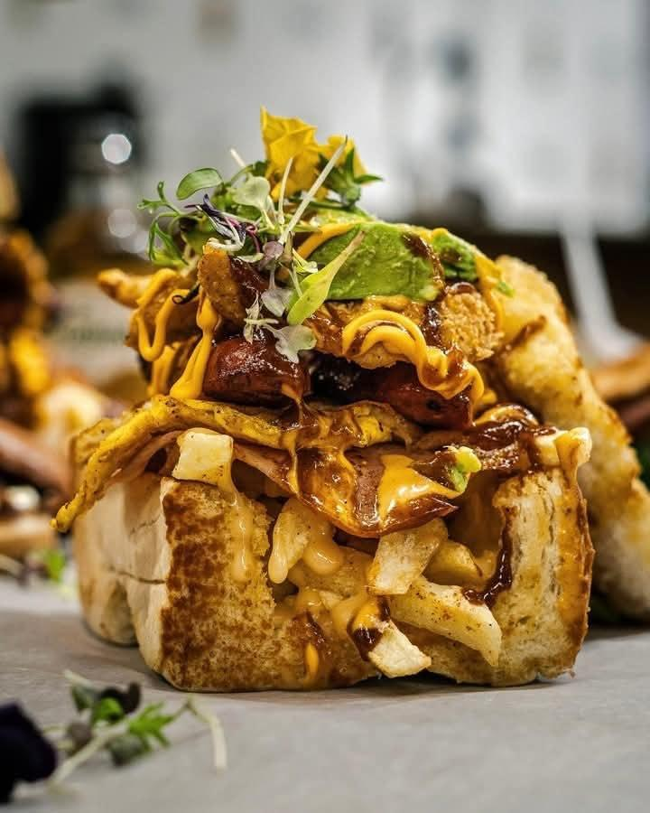
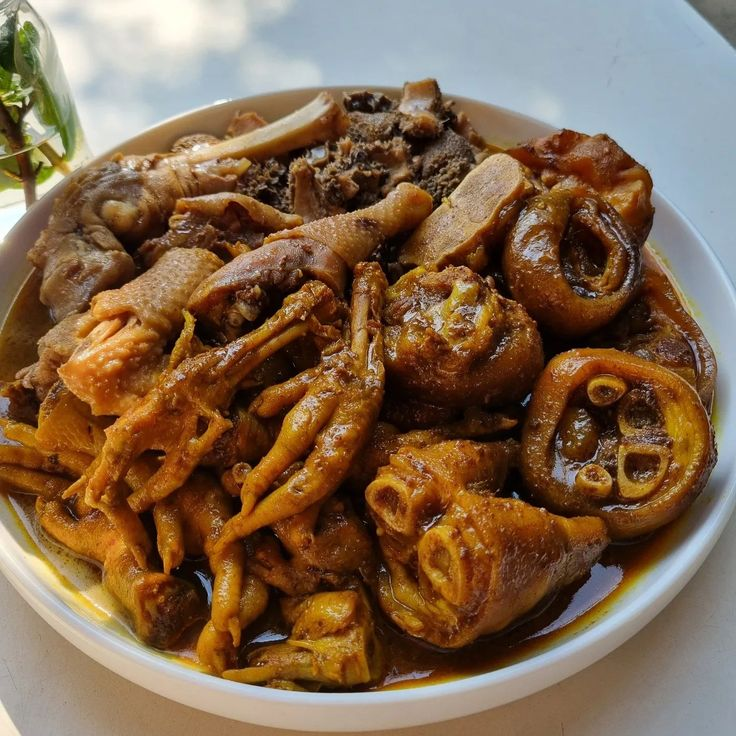

Classic South African Dishes
Discover the rich culinary heritage of South Africa with our selection of classic dishes, each crafted to bring out the authentic flavors and traditions of the region.
Fish and Chips
Enjoy the crispy, golden fish served with thick-cut chips, a beloved classic that brings a taste of the coast to your plate.
Comes in two different fish options(hake or snoek) and a choice to be served with slap chips, yellow rice or green salad.

Peri-Peri Chicken
Experience the fiery heat of our Peri-Peri chicken, a spicy delight that showcases the bold flavors of South African cuisine.
Served with a choice of slap chips, yellow rice or green salad.

Braai
Indulge in the smoky, savory flavors of our Braai, a traditional South African barbecue that brings people together around the fire.
Severed with pap, chakalaka, salsa, 4 chicken wings, 125g of boerewors any protein of choice(beef T-bone, pork chop, lamb chop)

Our Menu
We offer a variety of dishes that are designed to be both quick and delicious. From classic South African comfort foods to innovative culinary creations, our menu has something for everyone of all cultures.


